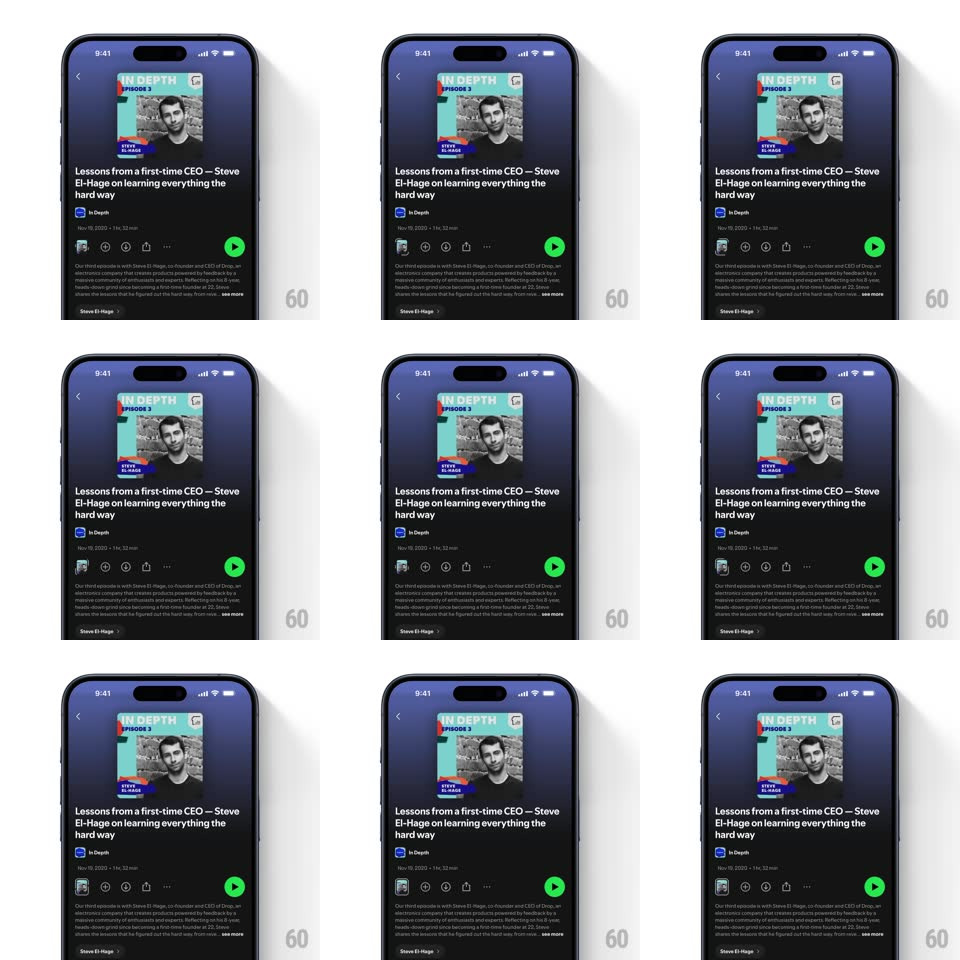

Media
Frame-by-frame

Rebuild this interaction 1:1: Spotify's clips touchpoint nudge - on the podcast episode page, the creator avatar chip in the action row periodically expands into a wider profile pill and contracts back, an automatic nudge toward the creator's stories.

Rebuild this interaction 1:1: Spotify's clips touchpoint nudge - on the podcast episode page, the creator avatar chip in the action row periodically expands into a wider profile pill and contracts back, an automatic nudge toward the creator's stories.
## Integration
Integration: stack-agnostic spec - springs given as stiffness/damping, timed motions as duration + curve; map every value to your framework and animation library of choice.
## Scene
The Spotify episode page ("Lessons from a first-time CEO - Steve El-Hage on learning everything the hard way", In Depth): artwork top-left, title, show row, then the action row (add, download, share, more icons) with the green play FAB at the right, description below, and a "Steve El-Hage >" creator row at the bottom.
## Motion spec
Pattern: auto expand/contract attention nudge.
- Idle: the creator touchpoint is a compact circular avatar chip in the action row.
- Every ~4s the chip runs the nudge: it expands horizontally into a pill (width animates out, spring ~340/20, 350ms) revealing the creator's name next to the avatar with a story ring around it.
- The pill holds for ~1.2s, then contracts back to the circle (300ms, ease-in) - the name fades out in the last 150ms.
- Neighbor icons in the action row shift to make room and spring back - the row breathes around the pill.
- If the user taps during expansion, the nudge loop stops and the clips/stories viewer opens immediately.
## Calibration
- The expansion is smooth and periodic - a heartbeat, not an alarm; max two nudges per session view.
- The story ring (a colored arc around the avatar) is the signal that there's tappable content.
## Reduced motion
Chip crossfades between circle and pill states once, no loop.
## Don't miss
- The green play button never moves - only the chips left of it reflow.
- The avatar inside the pill keeps its own subtle border glow while expanded.